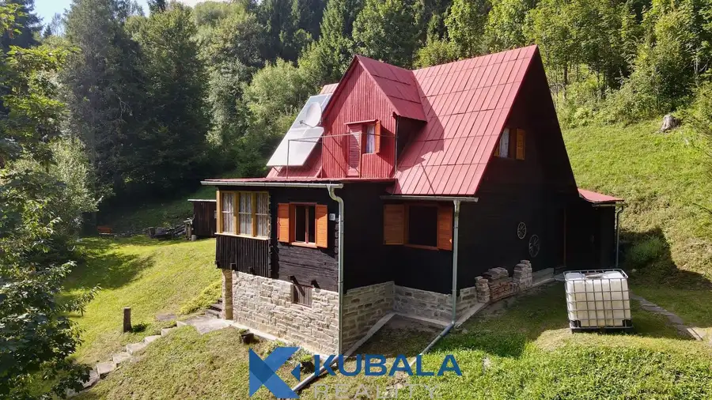
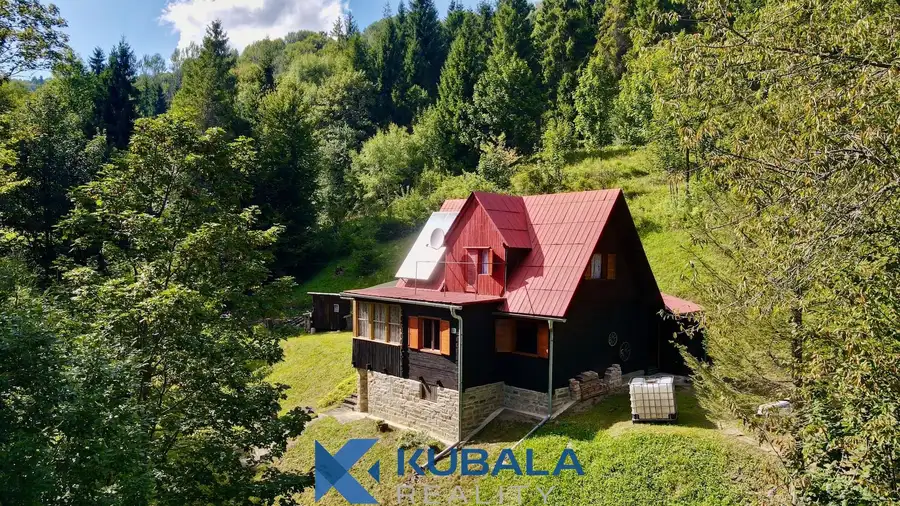
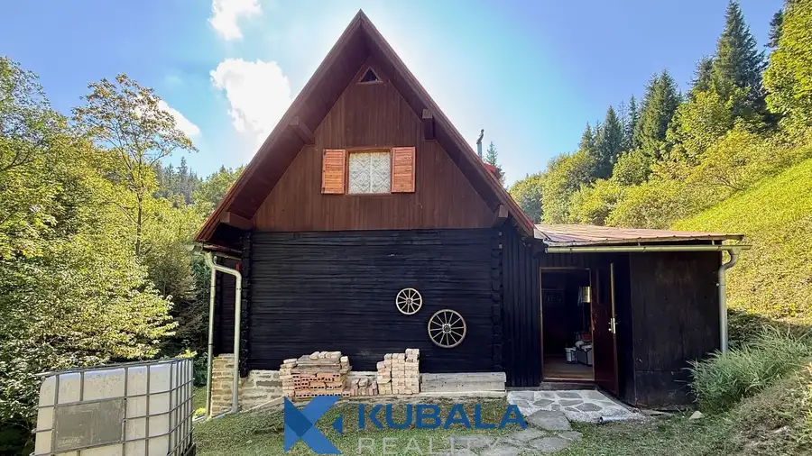
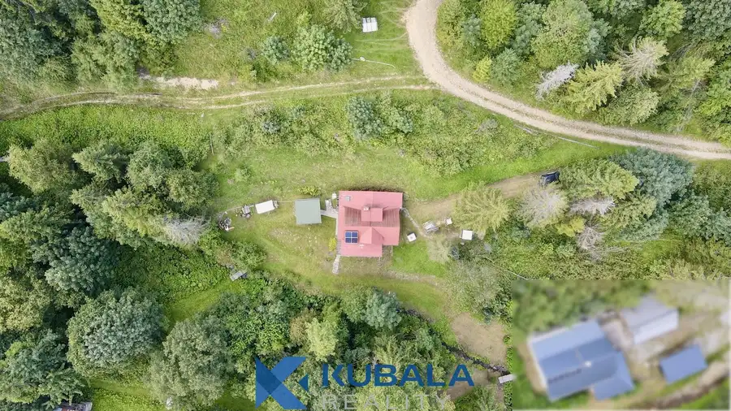
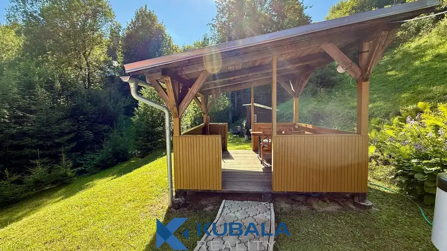
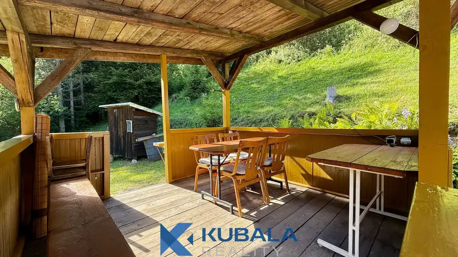

Na predaj chata v krásnom prostredí, Nová Bystrica
Nová Bystrica







- Plocha90 m²
- StavČiastočná rekonštrukcia
- VlastníctvoOsobné
O nehnuteľnosti
Ponúkame na predaj chatu v obci Nová Bystrica v časti Skaličná dolina. Chata sa nachádza na upravenom pozemku s rozlohou 634 m2 uprostred prírody obklopená lesom. Pozrite si fotografie a ďalšie informácie o chate, ktoré nájdete nižšie v texte. Lokalita a okolie:•Chata je vzdialená od centra obce približne 2,5 km. Prístup k chate vedie z centra obce po asfaltovej ceste, posledných 300 m je spevnená cesta zjazdná autami s pohonom 4x4.•Tiché prostredie, ideálne na oddych, rekreáciu a východiskový bod pre výlety do okolitej prírody.•Okolie ponúka pestré možnosti na turistiku, horskú cyklistiku, návštevu Múzea Kysuckej dediny vo Vychylovke, Slovenského orloja v Starej Bystrici alebo výlet do Terchovej, ktorá sa nachádza za kopcom. Skvelé podmienky na zbieranie húb sú samozrejmosťou.•V bližšom susedstve sa nachádzajú ďalšie dve rekreačné chaty.•Kúsok od chaty tečie horský potôčik, ktorý dotvára atmosféru pri relaxe v altánku alebo pri ohnisku.Dispozičné riešenie chaty:•Zastavaná plocha chaty je približne 90 m2 s rozmermi 9 x 10 m. Na spodnom, čiastočne podzemnom podlaží sa nachádza jedna pivničná miestnosť so samostatným prístupom zvonku.•Stredné podlažie (prízemie) tvorí predsieň, hlavná denná časť s priestrannou obývacou izbou a kuchyňou, priestranná veranda, kúpeľňa s umývadlom a vaňou. Z verandy je tiež prístupné suché WC.•V podkrovnom priestore sú vybudované tri menšie izby – spálne s kapacitou pre 5-6 osôb.Vybavenie chaty:•Hlavným zdrojom tepla s možnosťou varenia a pečenia a srdcom chaty je klasická šamotová murovaná pec zhotovená miestnym majstrom. Pec počas chladnejších dní dlho drží teplo a vykúri celé prízemie aj podkrovie.•Chata zostáva kompletne zariadená a vybavená, vrátane náradia, kosačiek a pod.•Zdrojom elektriny sú fotovoltické panely, batériové úložisko a menič napätia, na ktorý je napojený rozvod elektriny 230 V v celej chate aj v altánku.•Úžitková voda je z okolo tečúceho horského potoka, ktorá je čerpadlom dopravená do chaty.•Pitnú vodu je potrebné priniesť si z blízkeho prírodného prameňa, ktorého história sa spája s miestnym ľudovým liečiteľom.Vonkajšie príslušenstvo chaty tvorí:•priestranný altánok,•ohnisko s posedením,•kôlňa na drevo,•druhé suché WC,•sprcha so solárnym ohrevom vody.Záver:Ponuka vhodná pre tých, ktorí hľadajú miesto pre únik z každodenného zhonu, miesto, kde vás ráno zobudí čerstvý vzduch a žblnkot blízkeho potôčika.V réžii realitnej kancelárie je zabezpečenie kompletnej zmluvnej dokumentácie, asistencia pri odovzdaní nehnuteľnosti, poplatok za štandardné podanie na kataster, overenie podpisov a potrebné administratívne kroky spojené s predajom. Ak máte záujem o viac informácií alebo si prajete dohodnúť osobnú obhliadku nehnuteľnosti, neváhajte nás kontaktovať!Mgr. Róbert Kubala, RSc.KUBALA REALITY, s.r.o.Palárikova 2845/26A, 022 01 Čadcatel.: +421 907 336 493email: robert@kubalareality.sk
Parametre
- Druh
- Chata, drevenica, zrub
- Dátum zverejnenia
- 01. 05. 2026
- Energetický certifikát budovy
- nie je
- Orientácia
- Južná
- Plocha pozemku
- 634 m²
- Počet izieb / miestností
- 4
- Počet nadzemných podlaží
- 2
- Počet spální
- 3
- Stav nehnuteľnosti
- Čiastočná rekonštrukcia
- Terén pozemku
- Mierne svahovitý
- Typ
- Predaj
- Typ konštrukcie
- Drevená
- Vlastníctvo
- Osobné
- Vybavenie
- Sklad
- Vykurovanie
- Krb
- Zastavaná plocha
- 90 m²
- Úžitková plocha
- 90 m²